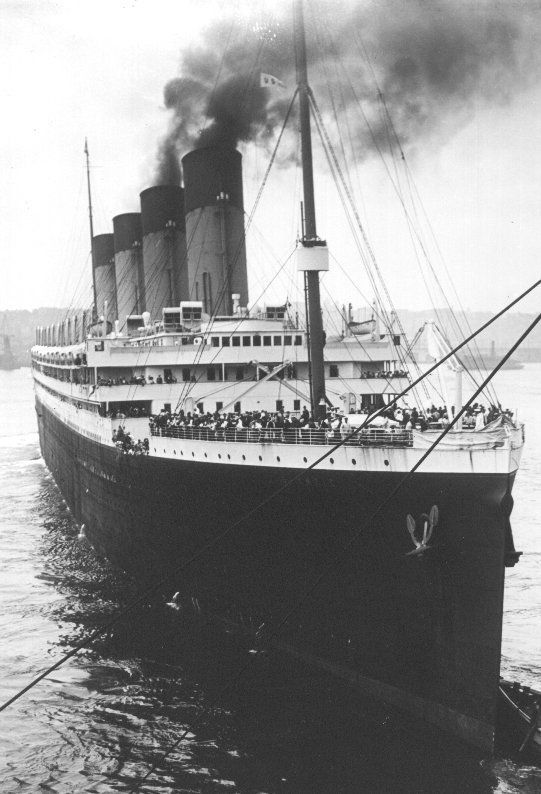
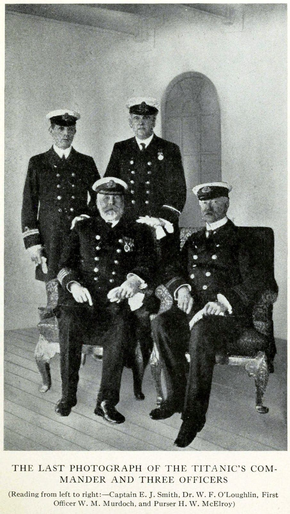
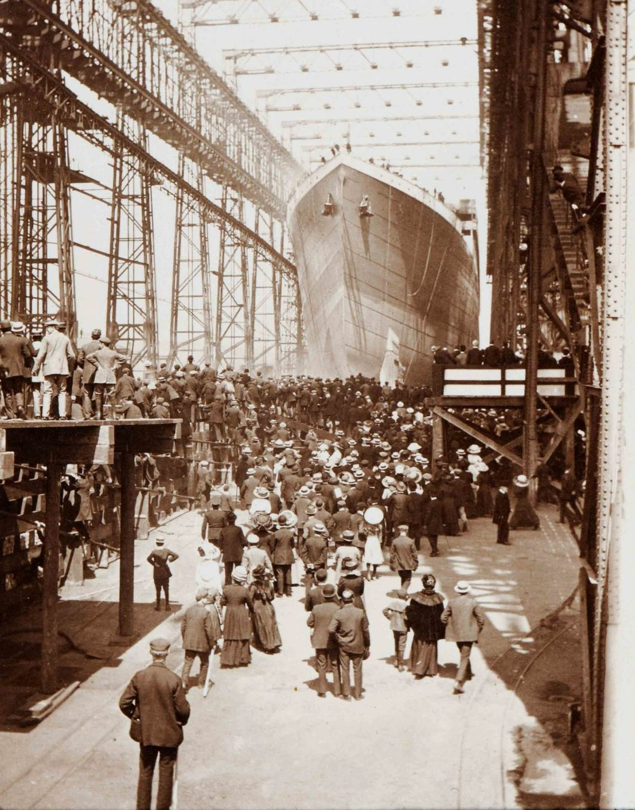

The Activity
From raw passenger records to analyst-style insight.
This project uses Python, pandas, NumPy, matplotlib, and seaborn to clean a real-world Titanic dataset, summarize survival patterns, and diagnose which passenger attributes were most associated with survival.
History Context
The story behind the numbers
The dataset becomes clearer when paired with historical imagery: the ship, its officers, its departure, and the evacuation conditions that shaped survival.

The Ship
The Titanic was one of the largest ocean liners of its time. In the dataset, class, fare, and cabin records help us analyze how passenger position and privilege related to survival outcomes.

The Officers
Leadership, procedure, and evacuation decisions are part of the broader historical context, although the dataset focuses mainly on passenger-level information.
The Evacuation
The survival patterns show large differences by sex, class, fare group, and family situation.
Analytics Dashboard
What happened, and what explains the patterns?
The charts below summarize the cleaned dataset and show survival rates across important passenger groups.
Passengers survived
Passengers did not survive
After cleaning
Converted into useful features
Survival Rate by Sex
DiagnosticSurvival Rate by Class
DiagnosticSurvival Rate by Age Group
Descriptive + DiagnosticFare Group Survival Pattern
DiagnosticMethodology
How the notebook was completed
Inspect
Checked shape, columns, data types, missing values, and duplicate records.
Clean
Filled missing age by sex and class median, filled embarked by mode, and handled cabin gaps.
Engineer
Created FamilySize, IsAlone, AgeGroup, FareGroup, HasCabin, and Deck.
Analyze
Used grouped survival rates, visual charts, and correlation analysis to explain patterns.
Key Findings
The strongest survival signals were social and structural.
Female passengers had a much higher survival rate than male passengers. First-class passengers survived at a higher rate than second- and third-class passengers. Higher fare groups and recorded cabin information were also associated with higher survival, but they should be interpreted as related factors rather than direct causes.
Visual Archive
Images used in the project website

Final Demo
10-minute walkthrough structure
TITANICISM supports the final video by turning the notebook into a guided story. Each member can speak through one part of the project: dataset, cleaning, descriptive analytics, diagnostic analytics, and conclusion.